- To move slides, use the arrow keys or swipe on your mobile device
- To see the speaker notes, press "s"
- To go to full screen, press "f"
- To print as PDF, go to this URL: ?print-pdf, then print.
- To get a PDF with speaker notes, add ?print-pdf&showNotes=true to the URL.
Ice in the Galactic Center
Savannah Gramze, Nazar Budaiev, Brandt Gaches, Ash Barnes, Cara Battersby Alyssa Bulatek, Jonny Henshaw, Desmond Jeff, Xing "Walker" Lu, Betsy Mills, Dan Walker, Matt Ashby
Supported by the NSF: 2008101, 2206511, CAREER 2142300, STSCI grants 1905, 2221
Slides at
https://keflavich.github.io/talks/gc_ice_iau2026.html or my webpage →talks

The CMZ underproduces stars given the apparent amount of dense gas.
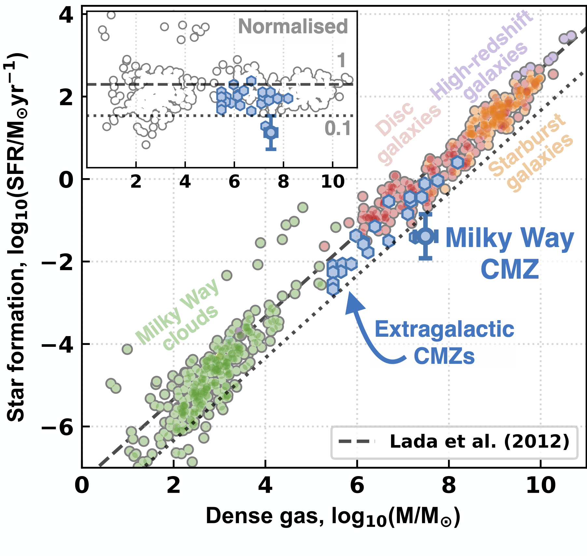
The most boring explanation: there's just less gas, but the dust is more opaque and the chemistry is extra rich.
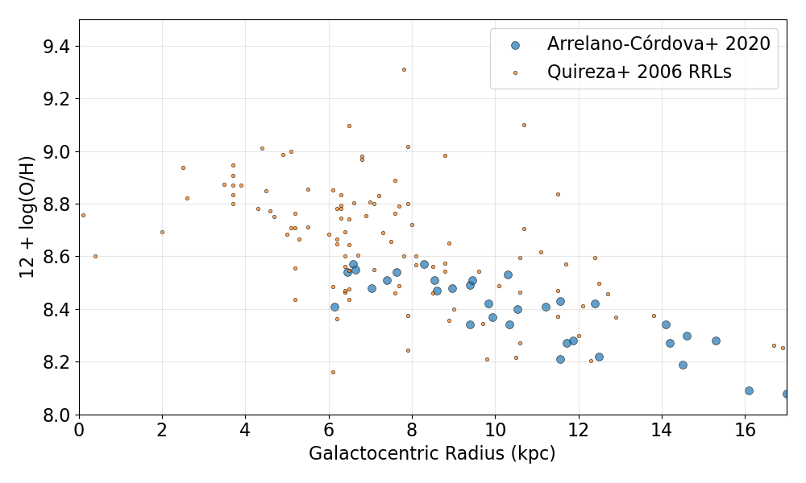

F466N
F405N

F466N
F405N


The dust ridge: Cloud B/C/D

... and a foreground cloud in front
We measure ice via stellar absorption
There are clear environmental differences

- Smith+ 2025: 27 data points

Standard assumed carbon breakdown, roughly.

Standard assumed carbon breakdown, roughly.

Standard assumed carbon breakdown, roughly.
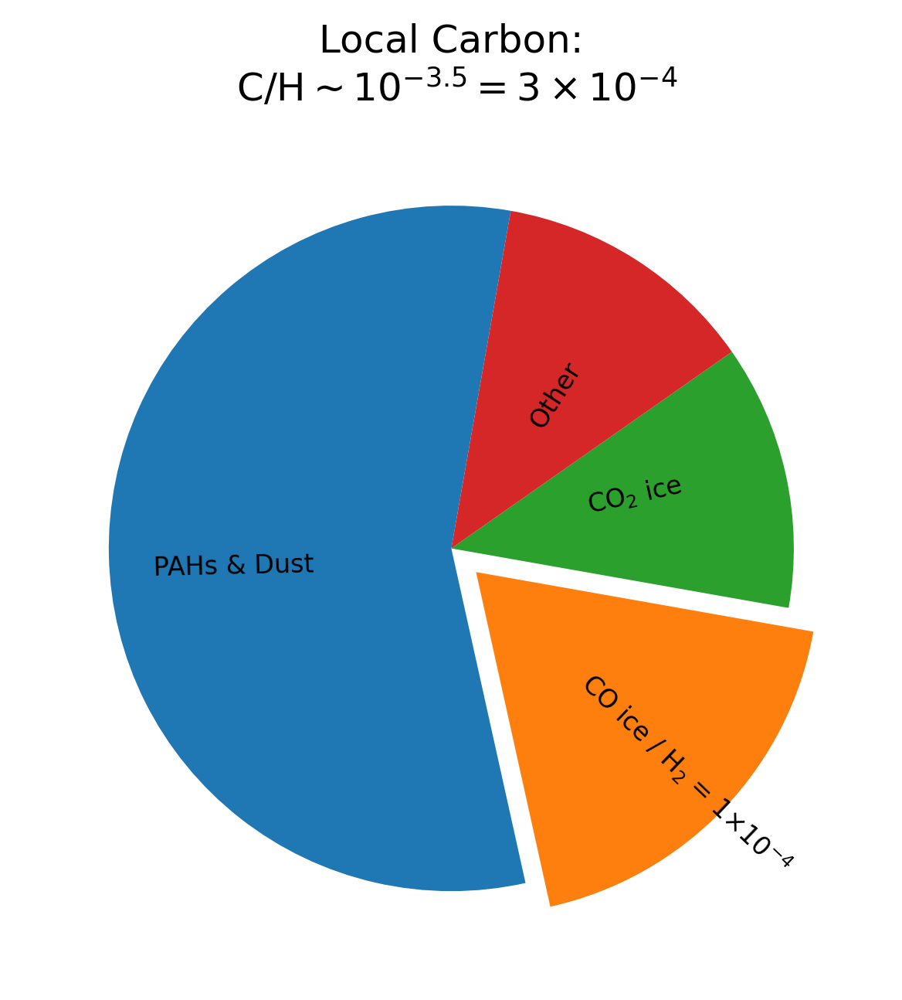
Standard assumed carbon breakdown, roughly.
The Smith+ 2025 measurements hint at nearly 100% of CO in ice
The Smith+ 2025 measurements hint at nearly 100% of CO in ice
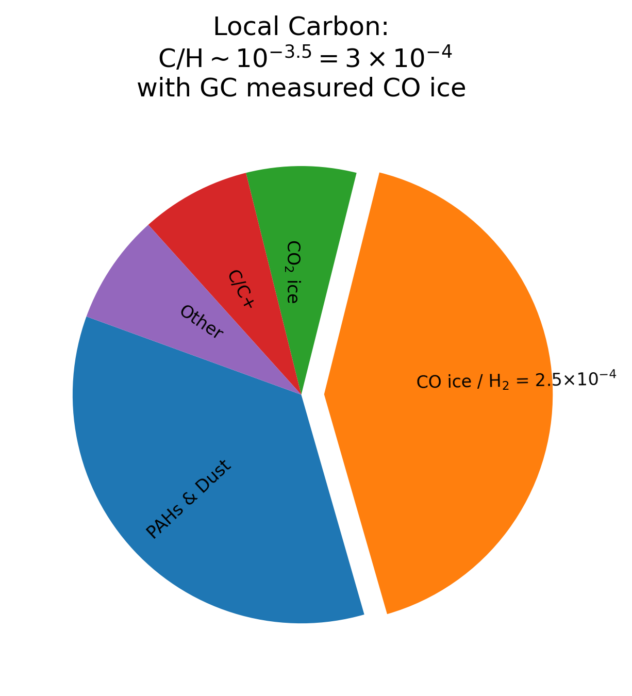
With measured GC CO ice column, the fraction of carbon in CO ice becomes uncomfortably large...
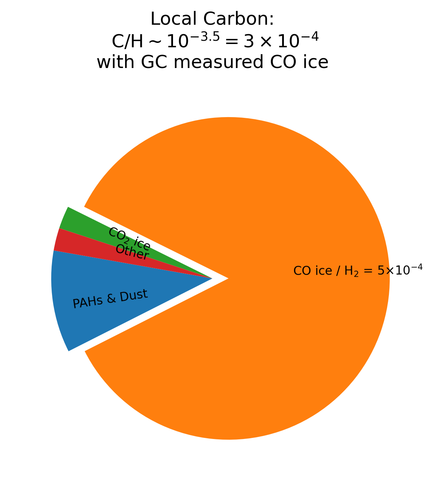
With measured GC CO ice column, the fraction of carbon in CO ice becomes uncomfortably large...
or even exceeds the total budget
or even exceeds the total budget
With measured GC CO ice column, the fraction of carbon in CO ice becomes uncomfortably large...
or even exceeds the total budget
or even exceeds the total budget

If $Z_{GC} = 2.5 Z_\odot$, the CO ice fraction goes back to normal ($\sim10-20$%).
(but some lines-of-sight still have $\sim$double that CO ice...)
(and two points make a line...)


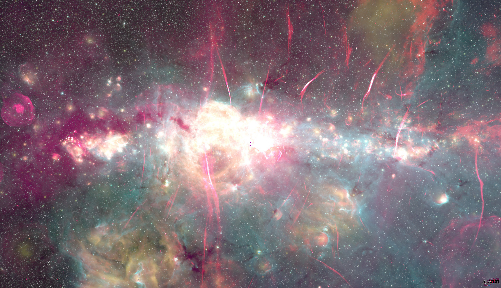
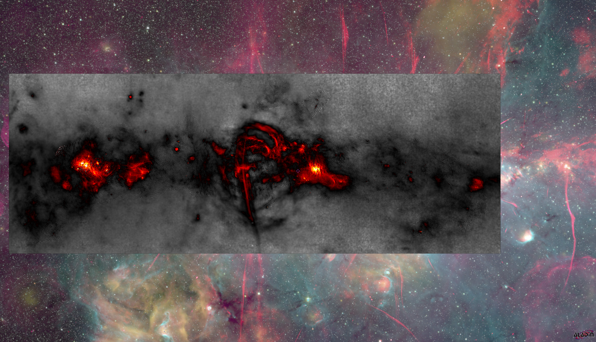
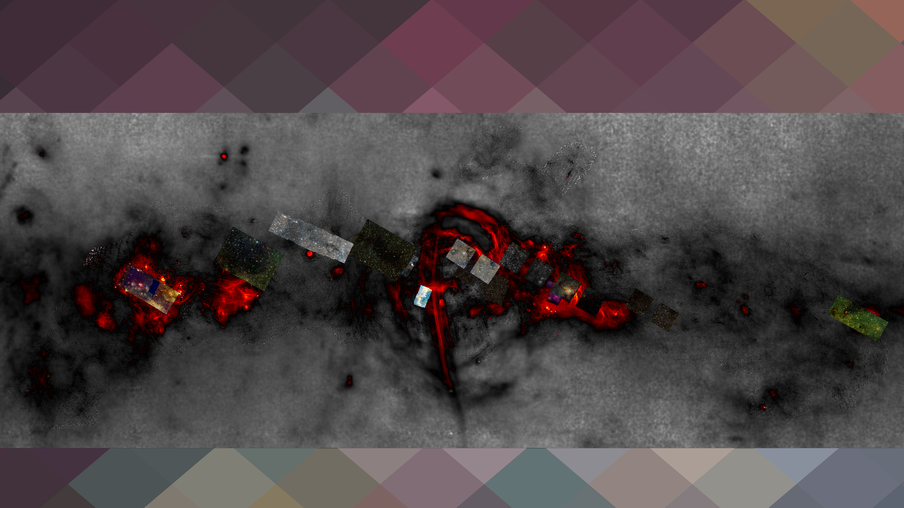
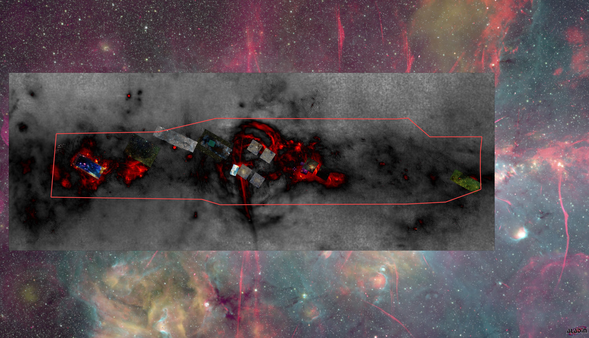
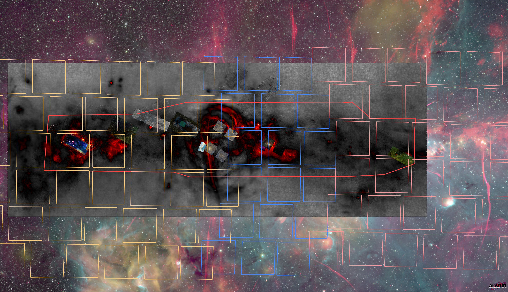
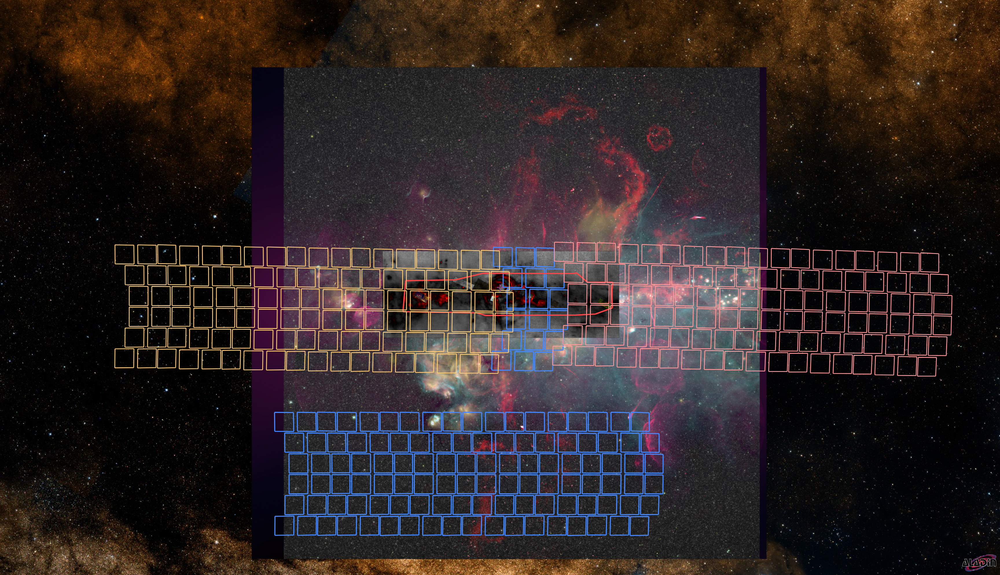